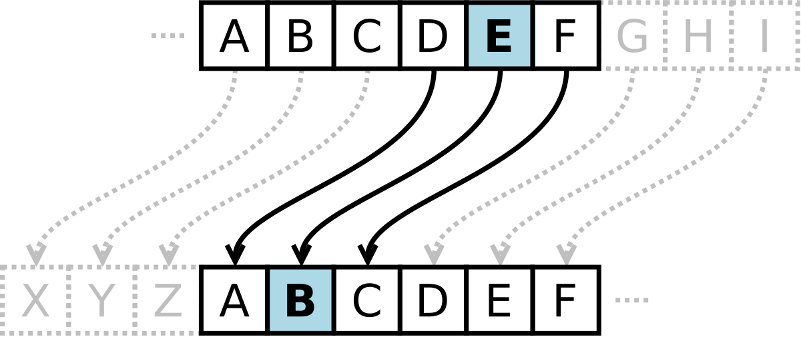

About the Caesar Cipher
The Caesar Cipher is one of the oldest and simplest forms of encryption. It is a substitution cipher that shifts the letters of the alphabet by a fixed amount. Named after Julius Caesar, who used it for military communications, it remains a fundamental example of cryptography.
